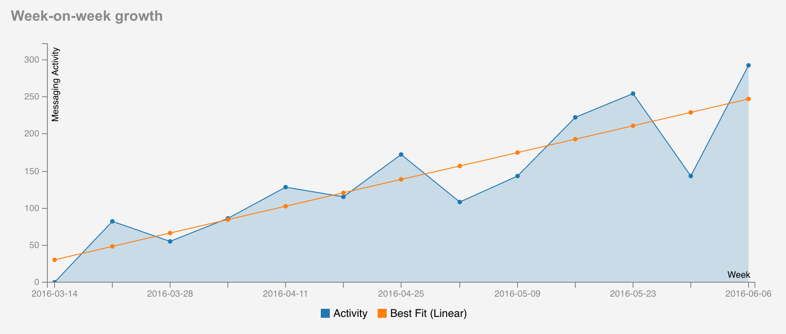
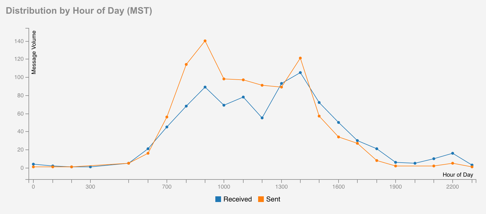
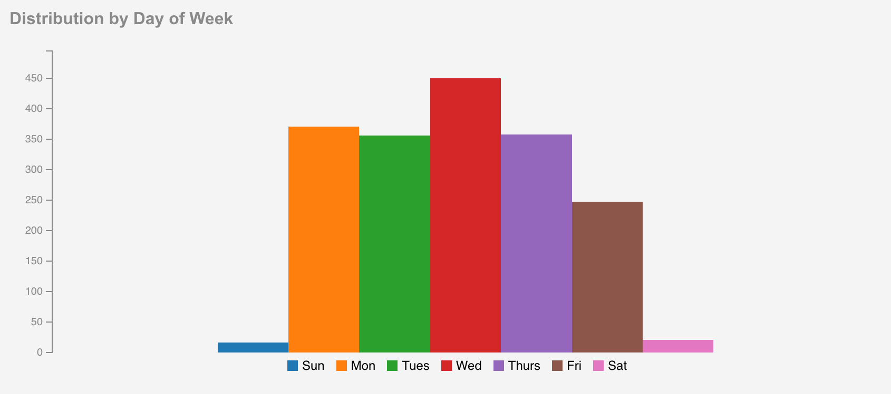

ClientComm Effectiveness
Application usage is measured by the number messages sent, open conversations, and volume of daily messaging activity, segmented by week, day and time of day. The below image series is taken from the live stats dashboard .
This dashboard contains a variety of visualizations that provide a publicly accessible overview of ClientComm's weekly statistics in context of its longitudinal performance thus far.
For a more in-depth evaluation of the tool's outcomes, review the Current Performance section of the Development category of this report.
How ClientComm Works / Home